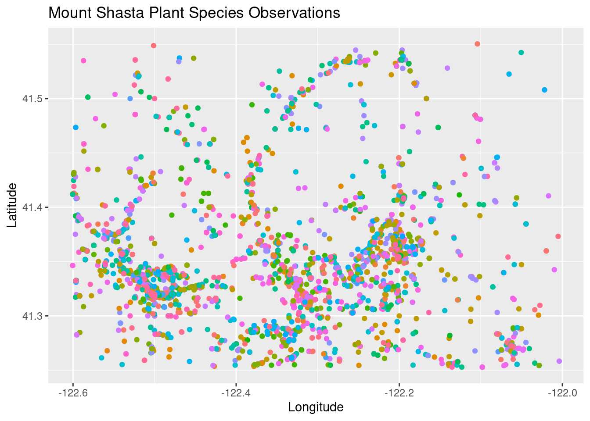

library(tidyverse)
library(readxl)
library(rgbif)
library(data.table)Edward Stuhl Wildflowers
data
scraping
web
extraction
meta-data
water color
wildflowers
plants
mount shasta
stuhl
–Mount Shasta Wildflowers GBIF data
I have been working on identifying and painting various local wildflowers from the book Mount Shasta Wild Flowers A Field Guide featuring the water color paintings of Edward Stuhl. Stuhl was an artist and mountaineer that gradually painted 189 plants over a 50 year career exploring the greater Mount Shasta area. All of his paintings are available to view online at CSU Chico here. I was interested in what sort of publicly available observation data there was for some of the more rare species. I downloaded the original list here, and made a few quick formatting edits to get it ready to pull into R.
Load the libraries.
Pull in the data, take a quick look, and make a character vector of the species names for the GBIF query.
shasta_plants <- read_excel("~/DATA/data/mount.shasta.plant.list.edit.xlsx")
head(shasta_plants)# A tibble: 6 × 5
ID Family Genus species `subspecies or variety`
<chr> <chr> <chr> <chr> <chr>
1 Ferns_Allies Dennstaedtiaceae Pteridium aquilinum var. pubescens
2 Ferns_Allies Dryopteridaceae Polystichum scopulinum <NA>
3 Ferns_Allies Equisetaceae Equisetum arvense <NA>
4 Ferns_Allies Equisetaceae Equisetum hyemale ssp. affine
5 Ferns_Allies Ophioglossaceae Botrychium pinnatum <NA>
6 Ferns_Allies Ophioglossaceae Botrychium pumicola <NA> dim(shasta_plants)[1] 482 5shasta_plants$query <- as.character(paste(shasta_plants$Genus, shasta_plants$species))
shasta_species <- shasta_plants$query
head(shasta_species)[1] "Pteridium aquilinum" "Polystichum scopulinum" "Equisetum arvense"
[4] "Equisetum hyemale" "Botrychium pinnatum" "Botrychium pumicola" Make a polygon to query from within and run a GBIF query iterating through the shasta_species character vector. The query takes a while for building this webpage, so I am going to just load the result instead to list the objects. If you want to run the query uncomment the following few lines.
mt_shasta_geometry <- paste('POLYGON((-122.600528 41.551515, -122.001773 41.551515, -122.001773 41.252791, -122.600528 41.252791, -122.600528 41.551515))')
# shasta_all <- occ_data(scientificName = shasta_species, hasCoordinate = TRUE, limit = 100,
# geometry = mt_shasta_geometry)
load("~/DATA/data/Stuhl_Shasta_species_GBIF.RData")
ls()[1] "mt_shasta_geometry" "shasta_all" "shasta_plants"
[4] "shasta_species" Iterate through the GBIF query list and pull out the latitude and longitude of each observation and bind them all together.
shasta_species_coords_list <- vector("list", length(shasta_species))
names(shasta_species_coords_list) <- shasta_species
for (x in shasta_species) {
coords <- shasta_all[[x]]$data[ , c("decimalLongitude", "decimalLatitude", "occurrenceStatus")]
shasta_species_coords_list[[x]] <- data.frame(cbind(species = x, coords))
}
species_coord_df <- rbindlist(shasta_species_coords_list, fill = T)
head(species_coord_df) species decimalLongitude decimalLatitude occurrenceStatus
1: Pteridium aquilinum -122.3233 41.28727 PRESENT
2: Pteridium aquilinum -122.3304 41.31041 PRESENT
3: Pteridium aquilinum -122.0664 41.27251 PRESENT
4: Pteridium aquilinum -122.0780 41.28300 PRESENT
5: Pteridium aquilinum -122.3066 41.27987 PRESENT
6: Pteridium aquilinum -122.4471 41.44342 PRESENTMake a quick plot of the data removing the legend or it will overwhelm the plot with the large number of species.
species_p1 <- ggplot(species_coord_df, aes(x=decimalLongitude, y = decimalLatitude, color = species)) +
geom_point() +
labs(x = "Longitude", y = "Latitude", title = "Mount Shasta Plant Species Observations") + theme(legend.position="none")
species_p1
ggsave("~/DATA/images/stuhl_species.png")A lifetime of exploration just in my general area! I hope to share more paintings of the same species as I am out and about around Mount Shasta.